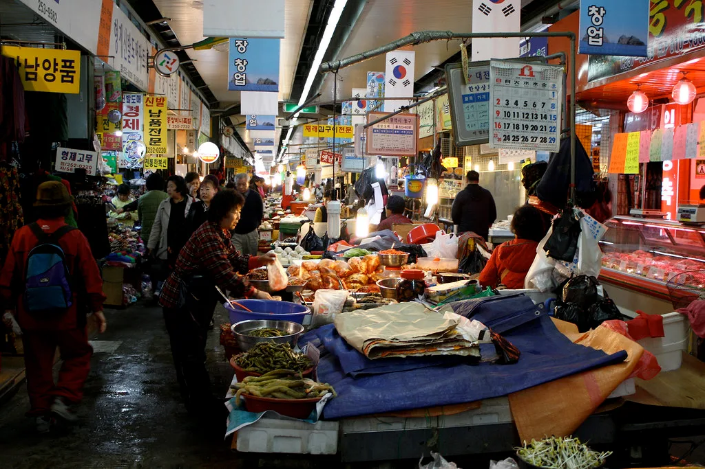
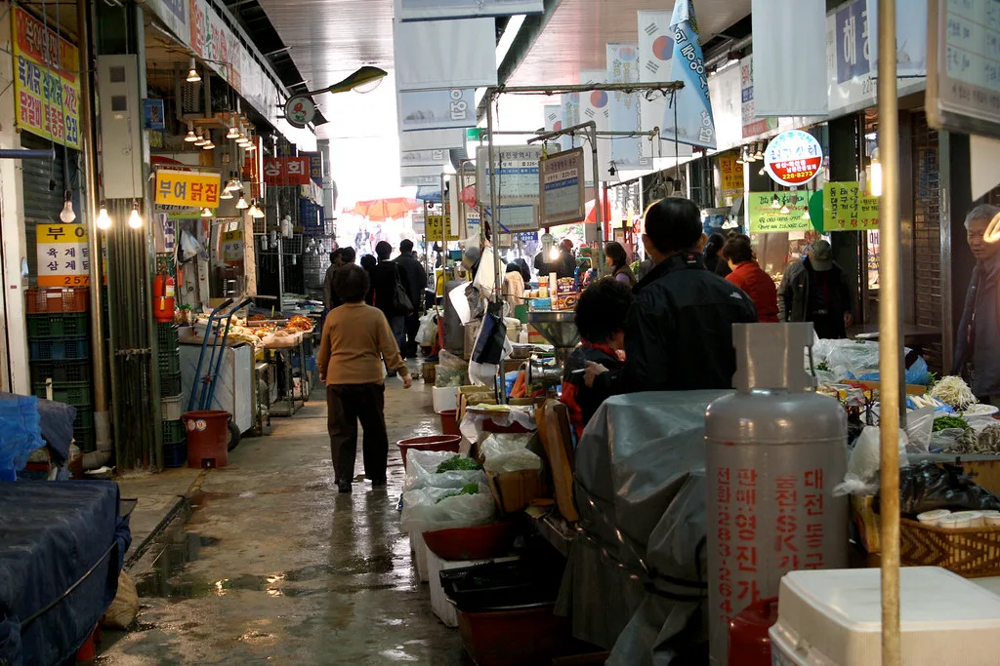

추석 차례상 비용, 9년 만에 하락…4인 기준 31만3089원
올해 추석 차례상을 차리는 데 드는 비용이 지난해보다 낮아지며 9년 만에 하락세로 돌아선 것으로 나타났다. 한국소비자단체협의회가 지난 3~4일 4인 가족 기준으로 추석 제수용품 25개 품목의 가격을 조사한 결과, 차례상 비용은 31만3089원으로 집계됐다. 이는 지난해보다 2.3% 내린 수준으로, 차례상 비용이 전년 대비 하락한 것은 2017년 이후 처음이다. 매년 명절을 앞두고 체감 물가 부담이 화두로 떠올랐던 것과 달리, 올해는 조사 이래 오랜만에 소비자들이 비용 부담 완화를 체감할 수 있게 됐다는 점에서 눈길을 끈다.
품목별로 보면 대부분의 항목에서 가격이 내렸다. 과일 가격이 7.3% 떨어지며 하락 폭이 가장 컸고, 수산물도 6.8% 낮아졌다. 기타식품과 가공식품도 각각 3.5%, 2.5% 내리며 전반적인 하락세에 힘을 보탰다. 다만 축산물만은 예외였다. 가축전염병 영향 등으로 공급이 줄어든 탓에 축산물 가격은 지난해보다 0.8% 소폭 올랐다. 과일과 수산물처럼 기상 여건이나 수급 상황에 민감한 품목들이 오히려 가격 안정을 이끌었다는 점은, 올해 작황과 어획량이 비교적 양호했음을 시사하는 대목이기도 하다.

정부는 이번 차례상 비용 하락의 배경으로 역대 최대 규모로 추진한 농축수산물 할인 지원과 성수품 공급 확대 정책을 꼽고 있다. 정부는 '2026년 추석 민생안정대책'에 따라 농축수산물 할인 지원에 가용 예산 1930억원을 투입했으며, 이는 지난해보다 두 배 이상 늘어난 규모다. 성수품 공급량도 평시 대비 1.6배 수준인 18만5천톤으로 확대해 명절 수요에 대응했다. 정부는 이런 물량 확대가 시장에서 실제 가격 안정으로 이어지도록 유통 단계별 점검도 병행했다고 설명했다.
소상공인과 중소기업을 위한 지원도 확대됐다. 정부는 역대 최대 규모인 43조4000억원의 명절 자금을 소상공인과 중소기업에 공급하기로 했으며, 추석 연휴 나흘간 전국 고속도로 통행료도 면제하기로 했다. 이런 조치들은 물가 부담뿐 아니라 명절 기간 소상공인의 자금 유동성과 국민들의 이동 편의를 함께 고려한 것으로 풀이된다. 정부는 이 같은 지원책을 통해 명절 대목 매출에 의존도가 높은 전통시장과 영세 소상공인의 자금 사정을 뒷받침하겠다는 목표도 함께 제시했다.

올해 추석은 9월 25일(금)이며, 법정 공휴일은 24일부터 26일까지 사흘이다. 일요일인 27일까지 포함하면 주 5일 근무자는 최대 나흘을 연달아 쉴 수 있어, 예년에 비해 상대적으로 짧은 연휴로 꼽힌다. 짧은 연휴에도 불구하고 차례상 비용이 낮아진 점은 소비자들의 체감 물가 부담을 다소나마 덜어줄 것으로 기대된다.
다만 축산물 가격 상승 등 일부 품목에서는 여전히 부담이 남아 있어, 소비자들의 체감도는 품목별로 엇갈릴 수 있다는 관측도 나온다. 정부는 이번 대책의 효과를 지속적으로 점검하며, 남은 연휴 기간에도 성수품 수급 상황을 면밀히 관리해 나갈 방침이라고 밝혔다. 소비자단체들도 명절 이후 성수품 가격 동향을 이어서 조사해 이번 대책의 실효성을 검증할 계획이어서, 이번 하락세가 일시적 현상에 그칠지 지속될지는 좀 더 지켜봐야 할 것으로 보인다.